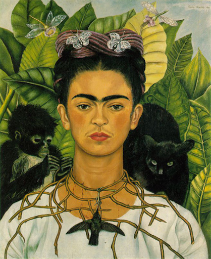

<h4> Me painted as Frida Kahlo would paint me</h4>

<table width="100%" border="0" cellspacing="0" cellpadding="0">

<font size="7">
<tr>
    <td width="30%" align="left" style="vertical-align: top">
    	
    </td>
    <td width="5%" align="left" style="vertical-align: center">
    	<font size="7">+</font>
    </td>
    <td width="30%" align="left" style="vertical-align: top">
    	
    </td>
    <td width="5%" align="left" style="vertical-align: center">
    	<font size="7">=</font>
    </td>
    <td width="30%" align="left" style="vertical-align: top">
    	
    </td>
</tr>
</table>
<font size="4">
<br>

<a href="https://dl.dropboxusercontent.com/u/9154523/fun/artstyle_transfer/index.html">More examples and info</a>
</font>
